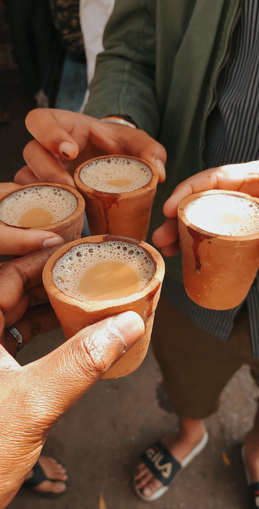
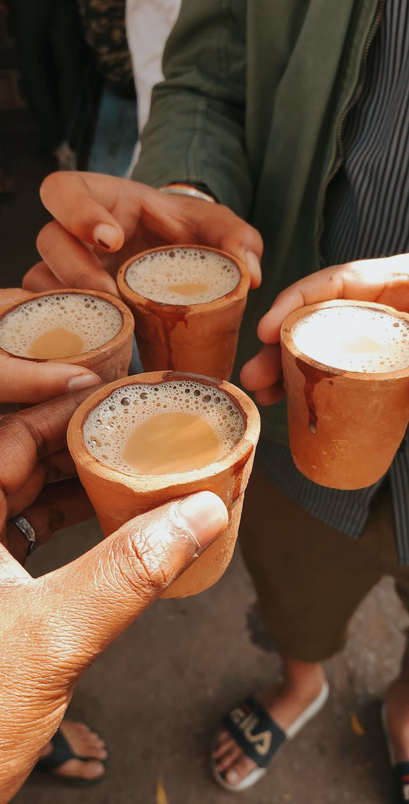

About
Food Treasure - Destination for Food Lovers
Welcome to FoodTreasure,your ultimate guide to culinary delights! Embark on a gastronomic journey with us as we unveil the best food places, meticulously curated area-wise and dish-wise, backed by personal experiences and Google locations.
Discover Flavorful Gems:
- Uncover hidden culinary treasures in your area, each spot handpicked for its unique flavors.
- Explore a variety of dishes, from local favorites to global delights, all recommended based on personal experiences.
Why Choose Food Treasure?
- Personal Touch: Our recommendations come with a personal touch, sharing the unique experiences that make each food spot special.
- Interactive Maps: Easily locate and plan your food adventures with our integrated Google locations.
- Community of Food Lovers: Join a vibrant community of food enthusiasts sharing their favorite foodie finds and experiences.
Your Culinary Adventure Begins:
Dive into the world of flavors with Food Treasure, your trusted destination for food lovers. Explore, savor, and embark on a delicious journey that goes beyond the ordinary.
Because when it comes to food, every bite should be a treasure!
Location wise :
Hyderabad food
Click
 

Hyderabad is famous for its delicious food especially its biryani. Biryani is a tasty rice dish with flavorful spices and tender meat, usually chicken or mutton. What makes Hyderabad biryani special is the way it's cooked, called "dum pukht," where it's slow-cooked in a sealed pot for amazing flavors. The result is a mouthwatering combination of fragrant rice and juicy meat. Locals take great pride in their biryani, and you can find different types, from spicy to aromatic. A visit to Hyderabad wouldn't be complete without trying their iconic biryani – it's a treat that you won't forget!